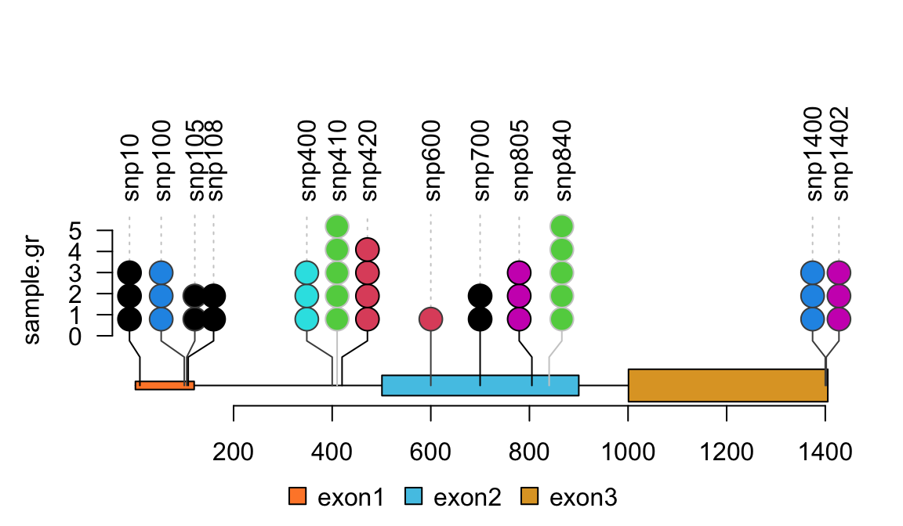

Load required libraries
BiocManager::install("jianhong/workshop2020", build_vignettes = TRUE)
Four steps for peak annotation
The functions, toGRanges, annotatePeakInBatch, and addGeneIDs in the ChIPpeakAnno, make the annotation of ChIP-Seq peaks streamlined into four major steps:
Read peak data with
toGRangesGenerate annotation data with
toGRangesAnnotate peaks with
annotatePeakInBatchAdd additional informations with
addGeneIDs
## First, load the ChIPpeakAnno package library(ChIPpeakAnno)
Step 1: convert the peak data from bed/broadPeak/narrowPeak etc. to GRanges with the toGRanges method
Here we use broadPeak file format as example.
## the sample file is included in ChIPpeakAnno package. ## chage the file path into your own file path to handle your data path <- system.file("extdata", "Tead4.broadPeak", package="ChIPpeakAnno") ## toGRanges is overlaoded method, ## by define the correct file format to import the file in correct coordinates peaks <- toGRanges(path, format="broadPeak") ## see top 2 lines of the imported peaks. ## the imported peaks will be packaged into GRanges object head(peaks, n=2)
## GRanges object with 2 ranges and 4 metadata columns:
## seqnames ranges strand | score signalValue pValue
## <Rle> <IRanges> <Rle> | <integer> <numeric> <numeric>
## peak12338 chr2 175473-176697 * | 206 668.42 -1
## peak12339 chr2 246412-246950 * | 31 100.23 -1
## qValue
## <numeric>
## peak12338 -1
## peak12339 -1
## -------
## seqinfo: 1 sequence from an unspecified genome; no seqlengths
Step 2: prepare annotation data with the toGRanges method
ChIP-seq is a kind of DNA-seq. In the mapping step, no transcriptome is used. In the annotation step, both Ensembl or UCSC annotations can be used. Depend on your research, less complex genome annotations, such as UCSC annotations, are prefearable for reproducible and robust gene/transcripts annotation. To discover and explain unknown biological mechanisms, more comprehensive and complex genome annotations are necessary, such as Ensembl.
Here we show how to prepare annotations based on TxDb package with the toGRanges method.
library(TxDb.Hsapiens.UCSC.hg19.knownGene) annoDataTxDb <- toGRanges(TxDb.Hsapiens.UCSC.hg19.knownGene) head(annoDataTxDb, n=2)
## GRanges object with 2 ranges and 0 metadata columns:
## seqnames ranges strand
## <Rle> <IRanges> <Rle>
## 1 chr19 58858172-58874214 -
## 10 chr8 18248755-18258723 +
## -------
## seqinfo: 93 sequences (1 circular) from hg19 genomeWe can also prepare annotations based on EnsDb package with the toGRanges method.
library(EnsDb.Hsapiens.v75) ##GRCh37.p13 annoDataEnsDb <- toGRanges(EnsDb.Hsapiens.v75) head(annoDataEnsDb, n=2)
## GRanges object with 2 ranges and 1 metadata column:
## seqnames ranges strand | gene_name
## <Rle> <IRanges> <Rle> | <character>
## ENSG00000223972 chr1 11869-14412 + | DDX11L1
## ENSG00000227232 chr1 14363-29806 - | WASH7P
## -------
## seqinfo: 273 sequences from GRCh37 genomeThe shortage of offline annotation packages is that it may not contain up-to-date data. We can also use online annotation data via the biomaRt or AnnotationHub packages. However, to use the biomaRt package, you must be very clear that the default mart service is based the newrest genome assembly. For example, if you are annotating the data mapped to hg19/GRCh37 or mm9/NCBIM37 assembly, you must change the default server into achive server. For more details, please refer the documentation of the biomaRt package.
library(biomaRt) ## here we use ensembl GRCh37.p13 (V75) service, ## use listEnsemblArchives() function to list the available host ## use listDatasets() function to list the available dataset mart <- useMart(biomart = "ensembl", dataset = "hsapiens_gene_ensembl", host = "feb2014.archive.ensembl.org") ## use the getAnnotation function to obtain the TSS for ensembl GRCh37.p13. annoDataMart <- getAnnotation(mart, featureType = "TSS") annoDataMart[head(names(annoDataEnsDb), n=2)]
Here I show some sample code to get annotations from AnnotationHub.
library(AnnotationHub) ah <- AnnotationHub() hg19 <- AnnotationHub::query(ah, c("UCSC", "Hsapiens", "hg19", "knownGene")) hg19
## AnnotationHub with 1 record
## # snapshotDate(): 2020-04-27
## # names(): AH52258
## # $dataprovider: UCSC
## # $species: Homo sapiens
## # $rdataclass: TxDb
## # $rdatadateadded: 2016-12-22
## # $title: TxDb.Hsapiens.UCSC.hg19.knownGene.sqlite
## # $description: UCSC transcript based annotations for Homo sapiens
## # $taxonomyid: 9606
## # $genome: UCSC genomes
## # $sourcetype: FASTA
## # $sourceurl: http://genome.ucsc.edu/, http://hgdownload.cse.ucsc.edu/golden...
## # $sourcesize: NA
## # $tags: c("UCSC", "Transcript", "Annotation")
## # retrieve record with 'object[["AH52258"]]'hg19TxDb <- hg19[["AH52258"]] annoDataHg19<- toGRanges(hg19TxDb) identical(annoDataHg19, annoDataTxDb)
## [1] TRUE## retrieve the gencode v32 annotation GRCh37 <- AnnotationHub::query(ah, c("GRCh37", "GENCODE", "v32", "TxDb")) annoDataGencode <- toGRanges(GRCh37[["AH75188"]]) head(annoDataGencode, n=2)
## GRanges object with 2 ranges and 0 metadata columns:
## seqnames ranges strand
## <Rle> <IRanges> <Rle>
## ENSG00000000003.15_3 chrX 99882105-99894988 -
## ENSG00000000005.6_3 chrX 99839933-99854882 +
## -------
## seqinfo: 25 sequences (1 circular) from hg19 genome
Step 3: annotate the peaks with the annotatePeakInBatch function.
Here we will compare the difference among differnt annotation sources.
First we compare the annotations from ensembl GRCh37.p13 between the EnsDb.Hsapiens.v75 package and ensembl archives.
seqlevelsStyle(annoDataEnsDb)
## [1] "UCSC"seqlevelsStyle(peaks)
## [1] "UCSC"## keep the seqnames in the same style if(!identical(seqlevelsStyle(peaks), seqlevelsStyle(annoDataEnsDb))){ seqlevelsStyle(peaks) <- seqlevelsStyle(annoDataEnsDb)[1] } ## do annotation by nearest TSS of Ensembl GRCh37.p13 annoEnsDb <- annotatePeakInBatch(peaks, AnnotationData=annoDataEnsDb) head(annoEnsDb, n=2)
## GRanges object with 2 ranges and 13 metadata columns:
## seqnames ranges strand | score
## <Rle> <IRanges> <Rle> | <integer>
## peak12338.ENSG00000227061 chr2 175473-176697 * | 206
## peak12339.ENSG00000143727 chr2 246412-246950 * | 31
## signalValue pValue qValue peak
## <numeric> <numeric> <numeric> <character>
## peak12338.ENSG00000227061 668.42 -1 -1 peak12338
## peak12339.ENSG00000143727 100.23 -1 -1 peak12339
## feature start_position end_position
## <character> <integer> <integer>
## peak12338.ENSG00000227061 ENSG00000227061 197569 202605
## peak12339.ENSG00000143727 ENSG00000143727 264140 278283
## feature_strand insideFeature distancetoFeature
## <character> <character> <numeric>
## peak12338.ENSG00000227061 + upstream -22096
## peak12339.ENSG00000143727 + upstream -17728
## shortestDistance fromOverlappingOrNearest
## <integer> <character>
## peak12338.ENSG00000227061 20872 NearestLocation
## peak12339.ENSG00000143727 17190 NearestLocation
## -------
## seqinfo: 1 sequence from an unspecified genome; no seqlengths# A pie chart can be used to demonstrate the overlap features of the peaks. pie1(table(annoEnsDb$insideFeature))
Figure 1. Pie chart of common peaks among EnsDb features.
## keep the seqnames in the same style if(!identical(seqlevelsStyle(peaks), seqlevelsStyle(annoDataMart))){ seqlevelsStyle(peaks) <- seqlevelsStyle(annoDataMart)[1] } ## do annotation by nearest TSS of Ensembl GRCh37.p13 annoMart <- annotatePeakInBatch(peaks, AnnotationData=annoDataMart) head(annoMart, n=2)
## GRanges object with 2 ranges and 13 metadata columns:
## seqnames ranges strand | score
## <Rle> <IRanges> <Rle> | <integer>
## peak12338.ENSG00000227061 chr2 175473-176697 * | 206
## peak12339.ENSG00000143727 chr2 246412-246950 * | 31
## signalValue pValue qValue peak
## <numeric> <numeric> <numeric> <character>
## peak12338.ENSG00000227061 668.42 -1 -1 peak12338
## peak12339.ENSG00000143727 100.23 -1 -1 peak12339
## feature start_position end_position
## <character> <integer> <integer>
## peak12338.ENSG00000227061 ENSG00000227061 197569 202605
## peak12339.ENSG00000143727 ENSG00000143727 264140 278283
## feature_strand insideFeature distancetoFeature
## <character> <character> <numeric>
## peak12338.ENSG00000227061 + upstream -22096
## peak12339.ENSG00000143727 + upstream -17728
## shortestDistance fromOverlappingOrNearest
## <integer> <character>
## peak12338.ENSG00000227061 20872 NearestLocation
## peak12339.ENSG00000143727 17190 NearestLocation
## -------
## seqinfo: 1 sequence from an unspecified genome; no seqlengths# A pie chart can be used to demonstrate the overlap features of the peaks. pie1(table(annoMart$insideFeature))
Figure 2. Pie chart of common peaks among biomart features.
We can see the minor difference between them. Lets check the reasons.
## check how many annotations are different from each other table(start(annoDataMart[names(annoDataEnsDb)])==start(annoDataEnsDb))
##
## FALSE TRUE
## 417 63685##
## FALSE TRUE
## 417 63685## get the samples head(annoDataMart[names(annoDataEnsDb)][ start(annoDataMart[names(annoDataEnsDb)])!=start(annoDataEnsDb)], n=2)
## GRanges object with 2 ranges and 1 metadata column:
## seqnames ranges strand |
## <Rle> <IRanges> <Rle> |
## LRG_198 LRG_198 5001-40990 + |
## LRG_262 LRG_262 33310-58918 + |
## description
## <character>
## LRG_198 agrin [Source:HGNC Symbol;Acc:329]
## LRG_262 pleckstrin homology domain containing, family G (with RhoGef domain) member 5 [Source:HGNC Symbol;Acc:29105]
## -------
## seqinfo: 690 sequences from an unspecified genome; no seqlengths## GRanges object with 2 ranges and 1 metadata column:
## seqnames ranges strand | gene_name
## <Rle> <IRanges> <Rle> | <character>
## LRG_198 chr1 955503-991492 + | LRG_198
## LRG_262 chr1 6526152-6551760 - | LRG_262
## -------
## seqinfo: 273 sequences from GRCh37 genome## check the biomart output getBM(attributes = c("ensembl_gene_id", 'chromosome_name', "description"), filters = "ensembl_gene_id", values = c("LRG_198", "LRG_262"), mart = mart)
## ensembl_gene_id chromosome_name
## 1 LRG_198 LRG_198
## 2 LRG_262 LRG_262
## description
## 1 agrin [Source:HGNC Symbol;Acc:329]
## 2 pleckstrin homology domain containing, family G (with RhoGef domain) member 5 [Source:HGNC Symbol;Acc:29105]Here we can see that the EnsDb.Hsapiens.v75 package already fixed the issue of chromosome_name issue, where the biomart online still output the wrong chromosome_name.
Now we annotate the peaks by UCSC hg19 annotations.
## keep the seqnames in the same style if(!identical(seqlevelsStyle(peaks), seqlevelsStyle(annoDataTxDb))){ seqlevelsStyle(peaks) <- seqlevelsStyle(annoDataTxDb)[1] } ## do annotation by nearest TSS of UCSC hg19 annotations annoTxDb <- annotatePeakInBatch(peaks, AnnotationData=annoDataTxDb) head(annoTxDb, n=2)
## GRanges object with 2 ranges and 13 metadata columns:
## seqnames ranges strand | score signalValue
## <Rle> <IRanges> <Rle> | <integer> <numeric>
## peak12338.26751 chr2 175473-176697 * | 206 668.42
## peak12339.26751 chr2 246412-246950 * | 31 100.23
## pValue qValue peak feature start_position
## <numeric> <numeric> <character> <character> <integer>
## peak12338.26751 -1 -1 peak12338 26751 218136
## peak12339.26751 -1 -1 peak12339 26751 218136
## end_position feature_strand insideFeature distancetoFeature
## <integer> <character> <character> <numeric>
## peak12338.26751 264810 - downstream 89337
## peak12339.26751 264810 - inside 18398
## shortestDistance fromOverlappingOrNearest
## <integer> <character>
## peak12338.26751 41439 NearestLocation
## peak12339.26751 17860 NearestLocation
## -------
## seqinfo: 1 sequence from an unspecified genome; no seqlengths# A pie chart can be used to demonstrate the overlap features of the peaks. pie1(table(annoTxDb$insideFeature))
Figure 3. Pie chart of common peaks among TxDb features.
Now we try to use gencode v32 annotations to annotate the peaks.
## keep the seqnames in the same style if(!identical(seqlevelsStyle(peaks), seqlevelsStyle(annoDataGencode))){ seqlevelsStyle(peaks) <- seqlevelsStyle(annoDataGencode)[1] } ## do annotation by nearest TSS of Gencode annoGencode <- annotatePeakInBatch(peaks, AnnotationData=annoDataGencode) head(annoGencode, n=2)
## GRanges object with 2 ranges and 13 metadata columns:
## seqnames ranges strand | score
## <Rle> <IRanges> <Rle> | <integer>
## peak12338.ENSG00000227061.2_6 chr2 175473-176697 * | 206
## peak12339.ENSG00000143727.16_3 chr2 246412-246950 * | 31
## signalValue pValue qValue peak
## <numeric> <numeric> <numeric> <character>
## peak12338.ENSG00000227061.2_6 668.42 -1 -1 peak12338
## peak12339.ENSG00000143727.16_3 100.23 -1 -1 peak12339
## feature start_position
## <character> <integer>
## peak12338.ENSG00000227061.2_6 ENSG00000227061.2_6 197569
## peak12339.ENSG00000143727.16_3 ENSG00000143727.16_3 264140
## end_position feature_strand insideFeature
## <integer> <character> <character>
## peak12338.ENSG00000227061.2_6 209892 + upstream
## peak12339.ENSG00000143727.16_3 278283 + upstream
## distancetoFeature shortestDistance
## <numeric> <integer>
## peak12338.ENSG00000227061.2_6 -22096 20872
## peak12339.ENSG00000143727.16_3 -17728 17190
## fromOverlappingOrNearest
## <character>
## peak12338.ENSG00000227061.2_6 NearestLocation
## peak12339.ENSG00000143727.16_3 NearestLocation
## -------
## seqinfo: 1 sequence from an unspecified genome; no seqlengths# A pie chart can be used to demonstrate the overlap features of the peaks. pie1(table(annoGencode$insideFeature))
Figure 4. Pie chart of common peaks among Gencode features.
We can see the difference between the annotations among Ensembl, UCSC and Gencode in annotation. Let’s check the overlaps of annotations.
Ensembl <- unique(annoDataEnsDb) UCSC <- unique(annoDataTxDb) Gencode <- unique(annoDataGencode) ## make the sequence info to same, otherwise can not compare. genome(seqinfo(Gencode)) <- genome(seqinfo(UCSC)) <- genome(seqinfo(Ensembl)) <- factor("hg19") isCircular(seqinfo(UCSC)) <- rep(FALSE, length(seqlevels(UCSC))) isCircular(seqinfo(Gencode)) <- rep(FALSE, length(seqlevels(Gencode))) seqlengths(Ensembl)["chrM"] <- seqlengths(UCSC)["chrM"] ## find the overlaps by max gap = 0 bp. ol <- findOverlapsOfPeaks(Ensembl, UCSC, Gencode, ignore.strand = FALSE, connectedPeaks="keepAll") ## venn diagram to show the overlaps makeVennDiagram(ol, connectedPeaks = "keepAll")
Figure 5. The overlap and intersection among UCSC, Ensembl, and Gencode annotations.
## $p.value
## Ensembl UCSC Gencode pval
## [1,] 0 1 1 NaN
## [2,] 1 0 1 NaN
## [3,] 1 1 0 NaN
##
## $vennCounts
## Ensembl UCSC Gencode Counts count.Ensembl count.UCSC count.Gencode
## [1,] 0 0 0 0 0 0 0
## [2,] 0 0 1 4016 0 0 4016
## [3,] 0 1 0 134 0 134 0
## [4,] 0 1 1 64 0 65 64
## [5,] 1 0 0 6182 6182 0 0
## [6,] 1 0 1 26961 27193 0 27373
## [7,] 1 1 0 9 9 9 0
## [8,] 1 1 1 22665 30652 22846 30744
## attr(,"class")
## [1] "VennCounts"
Step 4: add additional annotation with the addGeneIDs function
library(org.Hs.eg.db) annoEnsDb <- addGeneIDs(annoEnsDb, orgAnn="org.Hs.eg.db", feature_id_type="ensembl_gene_id", IDs2Add=c("symbol")) head(annoEnsDb, n=2)
## GRanges object with 2 ranges and 14 metadata columns:
## seqnames ranges strand | score
## <Rle> <IRanges> <Rle> | <integer>
## peak12338.ENSG00000227061 chr2 175473-176697 * | 206
## peak12339.ENSG00000143727 chr2 246412-246950 * | 31
## signalValue pValue qValue peak
## <numeric> <numeric> <numeric> <character>
## peak12338.ENSG00000227061 668.42 -1 -1 peak12338
## peak12339.ENSG00000143727 100.23 -1 -1 peak12339
## feature start_position end_position
## <character> <integer> <integer>
## peak12338.ENSG00000227061 ENSG00000227061 197569 202605
## peak12339.ENSG00000143727 ENSG00000143727 264140 278283
## feature_strand insideFeature distancetoFeature
## <character> <character> <numeric>
## peak12338.ENSG00000227061 + upstream -22096
## peak12339.ENSG00000143727 + upstream -17728
## shortestDistance fromOverlappingOrNearest
## <integer> <character>
## peak12338.ENSG00000227061 20872 NearestLocation
## peak12339.ENSG00000143727 17190 NearestLocation
## symbol
## <character>
## peak12338.ENSG00000227061 <NA>
## peak12339.ENSG00000143727 ACP1
## -------
## seqinfo: 1 sequence from an unspecified genome; no seqlengthsannoTxDb <- addGeneIDs(annoTxDb, orgAnn="org.Hs.eg.db", feature_id_type="entrez_id", IDs2Add=c("symbol")) head(annoTxDb, n=2)
## GRanges object with 2 ranges and 14 metadata columns:
## seqnames ranges strand | score signalValue
## <Rle> <IRanges> <Rle> | <integer> <numeric>
## peak12338.26751 chr2 175473-176697 * | 206 668.42
## peak12339.26751 chr2 246412-246950 * | 31 100.23
## pValue qValue peak feature start_position
## <numeric> <numeric> <character> <character> <integer>
## peak12338.26751 -1 -1 peak12338 26751 218136
## peak12339.26751 -1 -1 peak12339 26751 218136
## end_position feature_strand insideFeature distancetoFeature
## <integer> <character> <character> <numeric>
## peak12338.26751 264810 - downstream 89337
## peak12339.26751 264810 - inside 18398
## shortestDistance fromOverlappingOrNearest symbol
## <integer> <character> <character>
## peak12338.26751 41439 NearestLocation SH3YL1
## peak12339.26751 17860 NearestLocation SH3YL1
## -------
## seqinfo: 1 sequence from an unspecified genome; no seqlengthsannoGencode$entrez_id <- xget(sub("(ENSG\\d{11}).*$", "\\1", as.character(annoGencode$feature)), org.Hs.egENSEMBL2EG, output = "last") annoGencode$symbol[!is.na(annoGencode$entrez_id)] <- xget(annoGencode$entrez_id[!is.na(annoGencode$entrez_id)], org.Hs.egSYMBOL) head(annoGencode)
## GRanges object with 6 ranges and 15 metadata columns:
## seqnames ranges strand | score
## <Rle> <IRanges> <Rle> | <integer>
## peak12338.ENSG00000227061.2_6 chr2 175473-176697 * | 206
## peak12339.ENSG00000143727.16_3 chr2 246412-246950 * | 31
## peak12340.ENSG00000143727.16_3 chr2 249352-250233 * | 195
## peak12341.ENSG00000143727.16_3 chr2 259896-261404 * | 510
## peak12342.ENSG00000143727.16_3 chr2 261931-263148 * | 48
## peak12343.ENSG00000236856.1_6 chr2 378232-378871 * | 132
## signalValue pValue qValue peak
## <numeric> <numeric> <numeric> <character>
## peak12338.ENSG00000227061.2_6 668.42 -1 -1 peak12338
## peak12339.ENSG00000143727.16_3 100.23 -1 -1 peak12339
## peak12340.ENSG00000143727.16_3 630.65 -1 -1 peak12340
## peak12341.ENSG00000143727.16_3 1649.19 -1 -1 peak12341
## peak12342.ENSG00000143727.16_3 155.56 -1 -1 peak12342
## peak12343.ENSG00000236856.1_6 426.52 -1 -1 peak12343
## feature start_position
## <character> <integer>
## peak12338.ENSG00000227061.2_6 ENSG00000227061.2_6 197569
## peak12339.ENSG00000143727.16_3 ENSG00000143727.16_3 264140
## peak12340.ENSG00000143727.16_3 ENSG00000143727.16_3 264140
## peak12341.ENSG00000143727.16_3 ENSG00000143727.16_3 264140
## peak12342.ENSG00000143727.16_3 ENSG00000143727.16_3 264140
## peak12343.ENSG00000236856.1_6 ENSG00000236856.1_6 388412
## end_position feature_strand insideFeature
## <integer> <character> <character>
## peak12338.ENSG00000227061.2_6 209892 + upstream
## peak12339.ENSG00000143727.16_3 278283 + upstream
## peak12340.ENSG00000143727.16_3 278283 + upstream
## peak12341.ENSG00000143727.16_3 278283 + upstream
## peak12342.ENSG00000143727.16_3 278283 + upstream
## peak12343.ENSG00000236856.1_6 416885 + upstream
## distancetoFeature shortestDistance
## <numeric> <integer>
## peak12338.ENSG00000227061.2_6 -22096 20872
## peak12339.ENSG00000143727.16_3 -17728 17190
## peak12340.ENSG00000143727.16_3 -14788 13907
## peak12341.ENSG00000143727.16_3 -4244 2736
## peak12342.ENSG00000143727.16_3 -2209 992
## peak12343.ENSG00000236856.1_6 -10180 9541
## fromOverlappingOrNearest entrez_id
## <character> <character>
## peak12338.ENSG00000227061.2_6 NearestLocation <NA>
## peak12339.ENSG00000143727.16_3 NearestLocation 52
## peak12340.ENSG00000143727.16_3 NearestLocation 52
## peak12341.ENSG00000143727.16_3 NearestLocation 52
## peak12342.ENSG00000143727.16_3 NearestLocation 52
## peak12343.ENSG00000236856.1_6 NearestLocation <NA>
## symbol
## <character>
## peak12338.ENSG00000227061.2_6 <NA>
## peak12339.ENSG00000143727.16_3 ACP1
## peak12340.ENSG00000143727.16_3 ACP1
## peak12341.ENSG00000143727.16_3 ACP1
## peak12342.ENSG00000143727.16_3 ACP1
## peak12343.ENSG00000236856.1_6 <NA>
## -------
## seqinfo: 1 sequence from an unspecified genome; no seqlengthslibrary(UpSetR) upset(fromList(list(Ensembl=unique(annoEnsDb$symbol), UCSC=unique(annoTxDb$symbol), Gencode=unique(annoGencode$symbol))), order.by = "freq")
Figure 6. upset plot of common gene symbols among annotations by Ensembl, UCSC and Gencode features.
As a conclusion, annotate with different annotation resources, even the other parameter keep same, the annotations will be different from each other. To improve the reproducibility, accuracy of an annotation source should be provided. Some people were advertizing their tools by playing this trick by using different annotations to mislead users.
Find overlaps for replicates
The function findOverlapsOfPeaks returns an object of overlappingPeaks, which contains there elements: venn_cnt, peaklist (a list of
overlapping peaks or unique peaks), and overlappingPeaks (a list of data frame consists of the annotation of all the overlapping peaks).
The following examples illustrate the usage of this method to convert BED and GFF file to GRanges, add metadata from orignal peaks to the overlap GRanges using function addMetadata, and visualize the overlapping using function makeVennDiagram.
library(ChIPpeakAnno) bed <- system.file("extdata", "MACS_output.bed", package="ChIPpeakAnno") gr1 <- toGRanges(bed, format="BED", header=FALSE) ## one can also try import from rtracklayer gff <- system.file("extdata", "GFF_peaks.gff", package="ChIPpeakAnno") gr2 <- toGRanges(gff, format="GFF", header=FALSE, skip=3) ## must keep the class exactly same as gr1$score, i.e., numeric. gr2$score <- as.numeric(gr2$score) ol <- findOverlapsOfPeaks(gr1, gr2, connectedPeaks = "keepAll") ## add metadata (mean of score) to the overlapping peaks ol <- addMetadata(ol, colNames="score", FUN=mean) head(ol$peaklist[["gr1///gr2"]], n=2)
## GRanges object with 2 ranges and 2 metadata columns:
## seqnames ranges strand | peakNames
## <Rle> <IRanges> <Rle> | <CharacterList>
## [1] chr1 713791-715578 * | gr1__MACS_peak_13,gr2__001,gr2__002
## [2] chr1 724851-727191 * | gr2__003,gr1__MACS_peak_14
## score
## <numeric>
## [1] 850.203
## [2] 29.170
## -------
## seqinfo: 1 sequence from an unspecified genome; no seqlengthsmakeVennDiagram(ol, fill=c("#009E73", "#F0E442"), # circle fill color col=c("#D55E00", "#0072B2"), #circle border color cat.col=c("#D55E00", "#0072B2")) # label color, keep same as circle border color
Figure 7. Venn diagram of overlaps for replicated experiments
## $p.value
## gr1 gr2 pval
## [1,] 1 1 0
##
## $vennCounts
## gr1 gr2 Counts count.gr1 count.gr2
## [1,] 0 0 0 0 0
## [2,] 0 1 61 0 61
## [3,] 1 0 62 62 0
## [4,] 1 1 166 168 169
## attr(,"class")
## [1] "VennCounts"But if we check the sum of the overlaps, the total number for each sample are not identical to inputed peak number. This can be fixed by set ‘connectedPeaks’ parameter into ‘keepAll’.
length(gr1)
## [1] 230length(gr2)
## [1] 23062+166
## [1] 22861+166
## [1] 227makeVennDiagram(ol, fill=c("#009E73", "#F0E442"), col=c("#D55E00", "#0072B2"), cat.col=c("#D55E00", "#0072B2"), connectedPeaks = "keepAll")
Figure 8. Venn diagram of overlaps with all original counts.
## $p.value
## gr1 gr2 pval
## [1,] 1 1 0
##
## $vennCounts
## gr1 gr2 Counts count.gr1 count.gr2
## [1,] 0 0 0 0 0
## [2,] 0 1 61 0 61
## [3,] 1 0 62 62 0
## [4,] 1 1 166 168 169
## attr(,"class")
## [1] "VennCounts"Select annotation method
Visualize binding site distribution relative to features
The assignChromosomeRegion function can be used to summarize the distribution of peaks over different type of features such as exon, intron, enhancer, proximal promoter, 5’ UTR and 3’ UTR. This distribution can be summarized in peak centric or nucleotide centric view using the function assignChromosomeRegion. Please note that one peak might span multiple type of features, leading to the number of annotated features greater than the total number of input peaks. At the peak centric view, precedence will dictate the annotation order when peaks span multiple type of features.
The sample code here plots the distribution of peaks are enriched around the promoters.
overlaps <- ol$peaklist[["gr1///gr2"]] ## get the overlapping peaks ## load TxDb to assign genomic elements library(TxDb.Hsapiens.UCSC.hg19.knownGene) aCR<-assignChromosomeRegion(overlaps, nucleotideLevel=FALSE, precedence=c("Promoters", "immediateDownstream", "fiveUTRs", "threeUTRs", "Exons", "Introns"), TxDb=TxDb.Hsapiens.UCSC.hg19.knownGene) barplot(aCR$percentage, las=3)
Figure 9. Peak distribution over different genomic features.
In addition, the distribution of the distance of overlapped peaks to the nearest feature such as the transcription start sites (TSS) can be plotted by the binOverFeature function. The sample code here plots the distribution of peaks around the TSS.
binOverFeature(overlaps, annotationData=annoDataTxDb, radius=5000, nbins=20, FUN=length, errFun=0, ylab="count", main="Distribution of aggregated peak numbers around TSS")
Figure 10. Distribution of peaks around transcript start sites.
Annotate peaks
The annotatePeakInBatch function provide multiple methods to annotate the peaks and those methods can be set by combination of multiple parameters. The ‘output’ is the key parameter to determine the annotation method. The default method is search the nearest features calculated as ‘PeakLoc - FeatureLocForDistance’. For more information, please refer the documentation of the annotatePeakInBatch function.
As shown from the distribution of aggregated peak numbers around TSS and the distribution of peaks in different of chromosome regions, most of the peaks locate around TSS. Therefore, it is reasonable to use the annotatePeakInBatch or annoPeaks to annotate the peaks to the promoter regions of Hg19/GRCh37 genes. Promoters can be specified with ‘bindingRegion’. For the following example, promoter region is defined as upstream 2000 and downstream 500 from TSS (bindingRegion=c(-2000, 500)).
overlaps.anno <- annotatePeakInBatch(overlaps, AnnotationData=annoDataTxDb, output="nearestBiDirectionalPromoters", bindingRegion=c(-2000, 500)) library(org.Hs.eg.db) overlaps.anno <- addGeneIDs(overlaps.anno, "org.Hs.eg.db", feature_id_type="entrez_id", IDs2Add = "symbol") head(overlaps.anno, n=2)
## GRanges object with 2 ranges and 10 metadata columns:
## seqnames ranges strand | peakNames
## <Rle> <IRanges> <Rle> | <CharacterList>
## X1 chr1 713791-715578 * | gr1__MACS_peak_13,gr2__001,gr2__002
## X4 chr1 856361-856999 * | gr1__MACS_peak_17,gr2__005
## score peak feature feature.ranges feature.strand distance
## <numeric> <character> <character> <IRanges> <Rle> <integer>
## X1 850.203 X1 100288069 700245-714068 - 0
## X4 54.690 X4 100130417 852953-854817 - 1543
## insideFeature distanceToSite symbol
## <character> <integer> <character>
## X1 overlapStart 0 LOC100288069
## X4 upstream 1543 LINC02593
## -------
## seqinfo: 1 sequence from an unspecified genome; no seqlengthslibrary(WriteXLS) WriteXLS(as.data.frame(unname(overlaps.anno)), "anno.xls")
The distribution of the common peaks around features can be visualized using a pie chart.
Figure 11. Pie chart of the distribution of common peaks around features.
Obtain enriched GO terms and Pathways
The following example shows how to use getEnrichedGO to obtain a list of enriched GO terms with annotated peaks. For pathway analysis, please use function getEnrichedPATH with reactome or KEGG database. Please note that by default feature_id_type is set as “ensembl_gene_id”. If you are using TxDb as annotation data, please set it to “entrez_id”.
over <- getEnrichedGO(overlaps.anno, orgAnn="org.Hs.eg.db", feature_id_type="entrez_id", maxP=.05, minGOterm=10, multiAdjMethod="BH", condense=TRUE) head(over[["bp"]][, -c(3, 10)], n=2)
## [1] go.id go.term Ontology pvalue
## [5] count.InDataset count.InGenome totaltermInDataset totaltermInGenome
## [9] EntrezID
## <0 rows> (or 0-length row.names)library(reactome.db) path <- getEnrichedPATH(overlaps.anno, "org.Hs.eg.db", "reactome.db", feature_id_type="entrez_id", maxP=.05) head(path, n=2)
## path.id EntrezID count.InDataset count.InGenome pvalue
## 1 R-HSA-196849 55229 2 123 0.03029926
## 2 R-HSA-196849 65220 2 123 0.03029926
## totaltermInDataset totaltermInGenome PATH
## 1 244 111075 NA
## 2 244 111075 NAOutput a summary of consensus in the peaks
There are multiple methods to get the consensus in the peaks:
output the fastq file by the
getAllPeakSequencefunction and search the motif by the 3rd program such as homer, MEME, and so on.test the pre-defined consensus patterns to see if target consensus are enriched or not by the
summarizePatternInPeaksfunction.calculate the z-scores of all combinations of oligonucleotide in a given length by Markove chain by the
oligoSummaryfunction.
Here is an example to get the Z-scores for short oligos.
library(seqinr) library(BSgenome.Hsapiens.UCSC.hg19) seq <- getAllPeakSequence(overlaps, upstream=20, downstream=20, genome=Hsapiens) ## output the fasta file for the 3nd program write2FASTA(seq, "test.fa") ## summary of the short oligos os <- oligoSummary(seq, oligoLength=6, MarkovOrder=3, quickMotif=TRUE) ## plot the results zscore <- sort(os$zscore) h <- hist(zscore, breaks=100, main="Histogram of Z-score") text(zscore[length(zscore)], max(h$counts)/10, labels=names(zscore[length(zscore)]), srt=90)
Figure 12. Histogram of Z-score of 6-mer
## generate the motifs library(motifStack) pfms <- mapply(function(.ele, id) new("pfm", mat=.ele, name=paste("SAMPLE motif", id)), os$motifs, 1:length(os$motifs)) motifStack(pfms)
Figure 13. Motif of simulation data
Find peaks with bi-directional promoters
Bidirectional promoters are the DNA regions located between TSS of two adjacent genes that are transcribed on opposite directions and often co-regulated by this shared promoter region. Here is an example to find peaks near bi-directional promoters.
bdp <- peaksNearBDP(overlaps, annoDataTxDb, maxgap=5000) c(bdp$percentPeaksWithBDP, bdp$n.peaks, bdp$n.peaksWithBDP)
## [1] 0.05421687 166.00000000 9.00000000head(bdp$peaksWithBDP, n=2)
## GRangesList object of length 2:
## $`4`
## GRanges object with 2 ranges and 10 metadata columns:
## seqnames ranges strand | peakNames score
## <Rle> <IRanges> <Rle> | <CharacterList> <numeric>
## X4 chr1 856361-856999 * | gr1__MACS_peak_17,gr2__005 54.69
## X4 chr1 856361-856999 * | gr1__MACS_peak_17,gr2__005 54.69
## bdp_idx peak feature feature.ranges feature.strand distance
## <integer> <character> <character> <IRanges> <Rle> <integer>
## X4 4 X4 100130417 852953-854817 - 1543
## X4 4 X4 148398 860530-879961 + 3530
## insideFeature distanceToSite
## <character> <integer>
## X4 upstream 1543
## X4 upstream 3530
## -------
## seqinfo: 1 sequence from an unspecified genome; no seqlengths
##
## $`5`
## GRanges object with 2 ranges and 10 metadata columns:
## seqnames ranges strand | peakNames score
## <Rle> <IRanges> <Rle> | <CharacterList> <numeric>
## X5 chr1 859315-860144 * | gr2__006,gr1__MACS_peak_18 81.485
## X5 chr1 859315-860144 * | gr2__006,gr1__MACS_peak_18 81.485
## bdp_idx peak feature feature.ranges feature.strand distance
## <integer> <character> <character> <IRanges> <Rle> <integer>
## X5 5 X5 100130417 852953-854817 - 4497
## X5 5 X5 148398 860530-879961 + 385
## insideFeature distanceToSite
## <character> <integer>
## X5 upstream 4497
## X5 upstream 385
## -------
## seqinfo: 1 sequence from an unspecified genome; no seqlengthsDetermine if there is a significant overlap among multiple sets of peaks
Given two or more peak lists from different TFs, one may be interested in finding whether DNA binding profile of those TFs are correlated, and if correlated, what is the common binding pattern.
Here we will show how to compare binding profiles from multiple transcription factors (TFs) by ChIP-seq sample data of TAF, YY1 and Tead4 from mouse.
path <- system.file("extdata", package="ChIPpeakAnno") files <- dir(path, "broadPeak") data <- sapply(file.path(path, files), toGRanges, format="broadPeak") (names(data) <- gsub(".broadPeak", "", files))
## [1] "TAF" "Tead4" "YY1"Hypergeometric test
When we test the association between two sets of data based on hypergeometric distribution, the number of all potential binding sites is required. The parameter totalTest in the makeVennDiagram function indicates how many potential peaks in total will be used in the hypergeometric test. It should be larger than the largest number of peaks in the peak list. The smaller it is set, the more stringent the test is. The time used to calculate p-value does not depend on the value of the totalTest. For practical guidance on how to choose totalTest, please refer to the post. The following example makes an assumption that there are 3% of coding region plus promoter region. Because the sample data is only a subset of chromosome 2, we estimate that the total binding sites is 1/24 of possible binding region in the genome.
ol <- findOverlapsOfPeaks(data, connectedPeaks="keepAll") averagePeakWidth <- mean(width(unlist(GRangesList(ol$peaklist)))) tot <- ceiling(3.3e+9 * .03 / averagePeakWidth / 24) makeVennDiagram(ol, totalTest=tot, connectedPeaks="keepAll", fill=c("#CC79A7", "#56B4E9", "#F0E442"), # circle fill color col=c("#D55E00", "#0072B2", "#E69F00"), #circle border color cat.col=c("#D55E00", "#0072B2", "#E69F00"))
Figure 14. Venn diagram of overlaps.
## $p.value
## TAF Tead4 YY1 pval
## [1,] 0 1 1 1.000000e+00
## [2,] 1 0 1 2.904297e-258
## [3,] 1 1 0 8.970986e-04
##
## $vennCounts
## TAF Tead4 YY1 Counts count.TAF count.Tead4 count.YY1
## [1,] 0 0 0 849 0 0 0
## [2,] 0 0 1 621 0 0 621
## [3,] 0 1 0 2097 0 2097 0
## [4,] 0 1 1 309 0 310 319
## [5,] 1 0 0 59 59 0 0
## [6,] 1 0 1 166 172 0 170
## [7,] 1 1 0 8 8 8 0
## [8,] 1 1 1 476 545 537 521
## attr(,"class")
## [1] "VennCounts"## see the difference if we set connectedPeaks to "keepFirstListConsistent" ## set connectedPeaks to keepFirstListConsistent will show consistent total ## number of peaks for the first peak list. makeVennDiagram(ol, totalTest=tot, connectedPeaks="keepFirstListConsistent", fill=c("#CC79A7", "#56B4E9", "#F0E442"), col=c("#D55E00", "#0072B2", "#E69F00"), cat.col=c("#D55E00", "#0072B2", "#E69F00"))
Figure 15. Venn diagram of overlaps for first TF.
## $p.value
## TAF Tead4 YY1 pval
## [1,] 0 1 1 1.000000e+00
## [2,] 1 0 1 2.904297e-258
## [3,] 1 1 0 8.970986e-04
##
## $vennCounts
## TAF Tead4 YY1 Counts count.TAF count.Tead4 count.YY1
## [1,] 0 0 0 849 0 0 0
## [2,] 0 0 1 621 0 0 621
## [3,] 0 1 0 2097 0 2097 0
## [4,] 0 1 1 309 0 310 319
## [5,] 1 0 0 59 59 0 0
## [6,] 1 0 1 166 172 0 170
## [7,] 1 1 0 8 8 8 0
## [8,] 1 1 1 476 545 537 521
## attr(,"class")
## [1] "VennCounts"Permutation test
The above hypergeometric test requires users to input an estimate of the total potential binding sites for a given TF. To circumvent this requirement, we implemented a permutation test called peakPermTest. Before performing a permutation test, users need to generate random peaks using the distribution discovered from the input peaks for a given feature type (transcripts or exons), to make sure the binding positions relative to features, such as TSS and geneEnd, and the width of the random peaks follow the distribution of that of the input peaks.
Alternatively, a peak pool representing all potential binding sites can be created with associated binding probabilities for random peak sampling using the preparePool function. Here is an example to build a peak pool for human genome using the transcription factor binding site clusters (V3) (see ?wgEncodeTfbsV3) downloaded from ENCODE with the HOT spots (?HOT.spots) removed. HOT spots are the genomic regions with high probability of being bound by many TFs in ChIP-seq experiments. We suggest remove those HOT spots from the peak lists before performing permutation test to avoid the overestimation of the association between the two input peak lists. Users can also choose to remove ENCODE blacklist for a given species. The blacklists were constructed by identifying consistently problematic regions over independent cell lines and types of experiments for each species in the ENCODE and modENCODE datasets. Please note that some of the blacklists may need to be converted to the correct genome assembly using liftover utility.
Following are the sample codes to do the permutation test using the permTest function:
data(HOT.spots) data(wgEncodeTfbsV3) hotGR <- reduce(unlist(HOT.spots)) removeOl <- function(.ele){ ol <- findOverlaps(.ele, hotGR) if(length(ol)>0) .ele <- .ele[-unique(queryHits(ol))] .ele } TAF <- removeOl(data[["TAF"]]) TEAD4 <- removeOl(data[["Tead4"]]) YY1 <- removeOl(data[["YY1"]]) # we subset the pool to save demo time set.seed(1) wgEncodeTfbsV3.subset <- wgEncodeTfbsV3[sample.int(length(wgEncodeTfbsV3), 2000)] pool <- new("permPool", grs=GRangesList(wgEncodeTfbsV3.subset), N=length(YY1)) pt1 <- peakPermTest(YY1, TEAD4, pool=pool, seed=1, force.parallel=FALSE) plot(pt1)
Figure 16. permutation test for YY1 and TEAD4
pt2 <- peakPermTest(YY1, TAF, pool=pool, seed=1, force.parallel=FALSE) plot(pt2)
Figure 17. permutation test for YY1 and TAF
Metagene analysis for given feature/peak ranges
You can easily visualize and compare the binding patterns of raw signals of multiple ChIP-Seq experiments using function featureAlignedHeatmap and featureAlignedDistribution.
features <- ol$peaklist[[length(ol$peaklist)]] feature.recentered <- reCenterPeaks(features, width=4000) ## here we also suggest importData function in bioconductor trackViewer package ## to import the coverage. ## compare rtracklayer, it will save you time when handle huge dataset. library(rtracklayer) files <- dir(path, "bigWig") if(.Platform$OS.type != "windows"){ cvglists <- sapply(file.path(path, files), import, format="BigWig", which=feature.recentered, as="RleList") }else{## rtracklayer can not import bigWig files on Windows load(file.path(path, "cvglist.rds")) } names(cvglists) <- gsub(".bigWig", "", files) feature.center <- reCenterPeaks(features, width=1) sig <- featureAlignedSignal(cvglists, feature.center, upstream=2000, downstream=2000) ##Because the bw file is only a subset of the original file, ##the signals are not exists for every peak. keep <- rowSums(sig[[2]]) > 0 sig <- sapply(sig, function(.ele) .ele[keep, ], simplify = FALSE) feature.center <- feature.center[keep] heatmap <- featureAlignedHeatmap(sig, feature.center, upstream=2000, downstream=2000, upper.extreme=c(3,.5,4))
Figure 18. Heatmap of aligned features sorted by signal of TAF
featureAlignedDistribution(sig, feature.center, upstream=2000, downstream=2000, type="l")
Figure 19. Distribution of aligned features
Below is for trackViewer:
Introduction
It is a routine way to show the distribution of mutation for genetic variations by lollipop-style (or needle-style) plot in a genome browser, along with a variety of genomic annotations, such as gene level or exon level models, CpG island, and so on. To show the SNP status or methylation data, a special plot, called lollipop plot or needle plot, is used to show the distribution along annotations. Many of currently available tools offline or online provide lollipop-like plot to show the mutation data such as cBioPortal Tools::MutationMapper[@gao2013integrative], EMBL-EBI::Pfam[@finn2006pfam], and BioJS::muts-needle-plot[@michael_p_schroeder_2015_14561], BiQ Analyzer[@bock2005biq], and Methylation plotter[@mallona2014methylation]. The cBioPortal Tools::MutationMapper is a well-known and easy to use on-line genome browser that can output high quality of figures with mutations by input tab-delimited mutation data. In R/Bioconductor, there are options to use the flexibility of the Rgraphics system to display Methylation data such as MethVisual[@zackay2010methvisual], REDseq[@zhu4redseq], and GenVisR[@skidmore2016genvisr].
Table 1: Tools availble for lollipop plot.
| software | inputs | online | description |
|---|---|---|---|
| MutationMapper[@gao2013integrative] | tab-delimited text | Yes | interprets mutations with different heights along protein annotations in automatic color theme |
| Pfam[@finn2006pfam] | JSON | Yes | could combine different line and head colors with different drawing styles |
| muts-needle-plot[@michael_p_schroeder_2015_14561] | JSON | No | plots data point with different colors, heights, and size along annotations, and highlighted selcted coordinates |
| BiQ Analyzer[@bock2005biq] | BiQ methylation file | Yes | interprets methylation status in black & white |
| Methylation plotter[@mallona2014methylation] | tab-delimited text | Yes | stacked multiple methylation status for multiple samples |
| MethVisual[@zackay2010methvisual] | R list | No | visualize the methylation status of CpGs according to their genomic position |
| REDseq[@zhu4redseq] | R list | No | plot frequencies of methylations and SNPs along a chromosome |
| GenVisR[@skidmore2016genvisr] | R dataframe | No | plot most accurate graphic representation of the ensembl annotation version based on biomart service |
All the tools available for the genomic data visualization mentioned above can meet the basic even complicated requirement. However, if there are multiple mutations in almost same position, it is very difficult to display the data using any available tools. What’s more there is a tendency that the figures it generated become more and more complex and busy. Thereby make it difficult in generating high quality pictures for publication in bunch. To fill this gap, we developed trackViewer, a R/Bioconductor package as an enhanced light-weight genome viewer for visualizing various types of high-throughput sequencing data, side by side or stacked with multiple annotation tracks. Besides the regular read coverage tracks supported by existing genome browsers/viewers, trackViewer can also be used to generate lollipop plot to depict the methylation and SNP/mutation status, together with coverage data and annotation tracks to facilitate integrated analysis of multi-omics data. In addition, figures generated by trackViewer are interactive, i.e., the feel-and-look such as the layout, the color scheme and the order of tracks can be easily customized by the users. Furthermore, trackViewer can be easily integrated into standard analysis pipeline for various high-throughput sequencing dataset such as ChIP-seq, RNA-seq, methylation-seq or DNA-seq. The images produced by trackViewer are highly customizable including labels, symbols, colors and size. Here, we illustrate its utilities and capabilities in deriving biological insights from multi-omics dataset from GEO/Encode.
Installation
BiocManager is used to install the released version of trackViewer.
To install the development version of trackViewer, please try
To check the current version of trackViewer, please try
packageVersion("trackViewer")
## [1] '1.24.1'Quick start for lollipop plot
Step 1. Prepare the methylation/variant/mutation data
The input data for lollipop plot by trackViewer is an object of GenomicRanges::GRanges.
## load library library(trackViewer) set.seed(123) ## set seed for random sampling to make sure it can be repeat. ## Here we use SNP sample data SNP <- c(10, 100, 105, 108, 400, 410, 420, 600, 700, 805, 840, 1400, 1402) ## use GenomicRanges::GRanges function to create a GRanges object. ## for real data, users can import vcf data via VariantAnnotation::readVcf function. sample.gr <- GRanges("chr1", IRanges(SNP, width=1, ## the name of GRanges object will be used as label names=paste0("snp", SNP)), ## score value will be used to for the height of lollipop score = sample.int(5, length(SNP), replace = TRUE), ## set the color for lollipop node. color = sample.int(6, length(SNP), replace = TRUE), ## set the lollipop stem color border = sample(c("black", "gray80", "gray30"), length(SNP), replace=TRUE) )
Step 2. Prepare the gene/protein model
The gene/protein model for lollipop plot by trackViewer is also an object of GenomicRanges::GRanges.
Step 3. Plot lollipop plot
The clustered events could be visualized one by one by jittered lollipop positions.
lolliplot(sample.gr, features.gr)

Plot data from Variant Call Format (VCF) file
VCF is a text file format that contains metadata and mutation information about genomic positions, original genotypes and optional genotypes. The trackViewer package could show single nucleotide polymorphisms (SNPs) from VCF file in lollipop-style plot. Figure @ref(fig:plotVCFdata) shows an example lollipop plot of real SNPs. Sample SNPs are a subset of 1000 variants and 50 samples from chromosome 22 taken from 1000 Genomes in VCF in the VariantAnnotation package. Different colors depict the new SNP events in the circles. The number of circles indicates the number of SNP events.
library(VariantAnnotation) ## load package for reading vcf file library(TxDb.Hsapiens.UCSC.hg19.knownGene) ## load package for gene model library(org.Hs.eg.db) ## load package for gene name library(rtracklayer) fl <- system.file("extdata", "chr22.vcf.gz", package="VariantAnnotation") ## set the track range gr <- GRanges("22", IRanges(50968014, 50970514, names="TYMP")) ## read in vcf file tab <- TabixFile(fl) vcf <- readVcf(fl, "hg19", param=gr) ## get GRanges from VCF object mutation.frequency <- rowRanges(vcf) ## keep the metadata mcols(mutation.frequency) <- cbind(mcols(mutation.frequency), VariantAnnotation::info(vcf)) ## set colors mutation.frequency$border <- "gray30" mutation.frequency$color <- ifelse(grepl("^rs", names(mutation.frequency)), "lightcyan", "lavender") ## plot Global Allele Frequency based on AC/AN mutation.frequency$score <- round(mutation.frequency$AF*100) ## change the SNPs label rotation angle mutation.frequency$label.parameter.rot <- 45 ## keep sequence level style same seqlevelsStyle(gr) <- seqlevelsStyle(mutation.frequency) <- "UCSC" seqlevels(mutation.frequency) <- "chr22" ## extract transcripts in the range trs <- geneModelFromTxdb(TxDb.Hsapiens.UCSC.hg19.knownGene, org.Hs.eg.db, gr=gr) ## subset the features to show the interested transcripts only features <- c(range(trs[[1]]$dat), range(trs[[5]]$dat)) ## define the feature labels names(features) <- c(trs[[1]]$name, trs[[5]]$name) ## define the feature colors features$fill <- c("lightblue", "mistyrose") ## define the feature heights features$height <- c(.02, .04) ## set the legends legends <- list(labels=c("known", "unkown"), fill=c("lightcyan", "lavender"), color=c("gray80", "gray80")) ## lollipop plot lolliplot(mutation.frequency, features, ranges=gr, type="circle", legend=legends)

lollipop plot for VCF data
Plot methylation data from bed format file
Any data can imported into a GRanges object can be viewed by trackViewer package. Sample methylations are random data generated for illustration and saved in bed format file. The rtracklayer package is used to import the methylation data into a GRanges. The transcripts are extracted from TxDb object and assigned gene symbol with org database. Here also show multiple transcripts could be shown in different colors and tracks.
library(TxDb.Hsapiens.UCSC.hg19.knownGene) ## load package for gene model library(org.Hs.eg.db) ## load package for gene name library(rtracklayer) ## set the track range gr <- GRanges("chr22", IRanges(50968014, 50970514, names="TYMP")) ## extract transcripts in the range trs <- geneModelFromTxdb(TxDb.Hsapiens.UCSC.hg19.knownGene, org.Hs.eg.db, gr=gr) ## subset the features to show the interested transcripts only features <- GRangesList(trs[[1]]$dat, trs[[5]]$dat, trs[[6]]$dat) flen <- elementNROWS(features) features <- unlist(features) ## define the feature track layers features$featureLayerID <- rep(1:2, c(sum(flen[-3]), flen[3])) ## define the feature labels names(features) <- features$symbol ## define the feature colors features$fill <- rep(c("lightblue", "mistyrose", "mistyrose"), flen) ## define the feature heights features$height <- ifelse(features$feature=="CDS", .04, .02) ## import methylation data from a bed file methy <- import(system.file("extdata", "methy.bed", package="trackViewer"), "BED") ## subset the data to simplify information methy <- methy[methy$score > 20] ## for pie plot, there are must be at least two numeric columns methy$score2 <- max(methy$score) - methy$score ## set the legends legends <- list(labels=c("methylated", "unmethylated"), fill=c("white", "lightblue"), color=c("black", "black")) ## lollipop plot, pie layout lolliplot(methy, features, ranges=gr, type="pie", legend=legends)
lollipop plot, pie layout
Plot lollipop plot for multiple patients in “pie.stack” layout
The percentage of methylation rates are shown by pie graph in different layers for different patients.
## simulate multiple patients rand.id <- sample.int(length(methy), 3*length(methy), replace=TRUE) rand.id <- sort(rand.id) methy.mul.patient <- methy[rand.id] ## pie.stack require metadata "stack.factor", and the metadata can not be ## stack.factor.order or stack.factor.first len.max <- max(table(rand.id)) stack.factors <- paste0("patient", formatC(1:len.max, width=nchar(as.character(len.max)), flag="0")) methy.mul.patient$stack.factor <- unlist(lapply(table(rand.id), sample, x=stack.factors)) methy.mul.patient$score <- sample.int(100, length(methy.mul.patient), replace=TRUE) ## for a pie plot, two or more numeric meta-columns are required. methy.mul.patient$score2 <- 100 - methy.mul.patient$score ## set different color set for different patient patient.color.set <- as.list(as.data.frame(rbind(rainbow(length(stack.factors)), "#FFFFFFFF"), stringsAsFactors=FALSE)) names(patient.color.set) <- stack.factors methy.mul.patient$color <- patient.color.set[methy.mul.patient$stack.factor] ## set the legends legends <- list(labels=stack.factors, col="gray80", fill=sapply(patient.color.set, `[`, 1)) ## lollipop plot lolliplot(methy.mul.patient, features, ranges=gr, type="pie.stack", legend=legends)
lollipop plot, pie.stack layout
Plot lollipop plot in caterpillar layout to compare two samples
The caterpillar layout can be used to side by side comparing two samples or to display dense data.
## use SNPsideID to set the layer of event sample.gr$SNPsideID <- sample(c("top", "bottom"), length(sample.gr), replace=TRUE) lolliplot(sample.gr, features.gr)

lollipop plot, caterpillar layout
Dandelion plot hundreds SNPs
Sometimes, there are as many as hundreds of SNPs or methylation status involved in one gene. Dandelion plot can be used to depict such dense SNPs or methylation. Please note that the height of the dandelion indicates the density of the events.
methy <- import(system.file("extdata", "methy.bed", package="trackViewer"), "BED") length(methy)
## [1] 38## set the color of dandelion leaves. methy$color <- 3 methy$border <- "gray" ## we suppose the total event are same (methy + unmethy) ## we rescale the methylation score by max value of the score m <- max(methy$score) methy$score <- methy$score/m # The area of the fan indicate the percentage of methylation or rate of mutation. dandelion.plot(methy, features, ranges=gr, type="fan")

dandelion plot